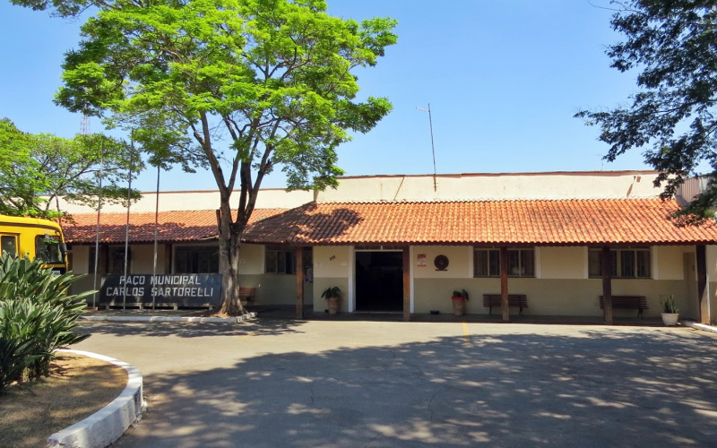

Conheça Iperó e Sua História
Fundada oficializada em 1965, Iperó é uma cidade marcada pelo acolhimento de seu povo e por seu papel histórico no desenvolvimento da nossa região. O município abriga importantes patrimônios ecológicos e tecnológicos, destacando-se como um polo de tranquilidade, turismo ecológico e crescimento consciente no interior paulista.
A Prefeitura Municipal trabalha continuamente para modernizar a infraestrutura urbana, preservar nossa rica história e oferecer serviços de qualidade nas áreas de saúde, educação e lazer para todos os iperoenses.
